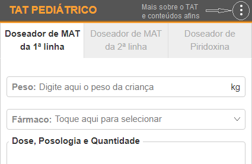

Visão geral sobre o TAT Pediátrico
O TAT Pediátrico é um serviço online gratuito que, de acordo com o peso inserido pelo usuário, doseia automaticamente medicamentos anti-tuberculose (MATs) e Piridoxina. Tem como referência o guião Avaliação e manejo de pacientes com Tuberculose, Protocolos Nacionais, Versão 2, 2019 que, até a data da publicação do TAT (Agosto/2024), ainda estava em vigor no Serviço Nacional de Saúde (SNS) em Moçambique.
O TAT Pediátrico é composto por 3 abas principais, respectivamente:
- Doseador de MATs da 1ª linha;
- Doseador de MATs da 2ª linha;
- Doseador de Piridoxina.

O Doseador está basicamente estruturado da seguinte forma:
- Um campo com o rótulo Peso, para inserir o peso em quilograma(s) da criança para a qual você pretende calcular a dose;
- Fármaco, campo de seleção com os fármacos anti-TB da 1ª linha, 2ª linha ou Piridoxina. no campo para abrir a lista e em seguida, selecione o fármaco do qual pretende calcular a dose.
- Dose, Posologia e Quantidade: secção de saída em que são automaticamente mostradas, numa mini-tabela, a dose, posologia e quantidade de comprimidos a dispensar (para 7, 15 e 30 dias) do fármaco selecionado de acordo com o peso inserido;
- Notas e Precauções: secção de saída em que são mostradas recomendações, interações medicamentosas, entre outras informações pertinentes acerca do fármaco selecionado.
Efeitos Adversos aos MATs de 1ª Linha
num título para exibir ou ocultar o seu conteúdo.
Náusea, Vómitos
Medicamentos Responsáveis: Rifampicina, Isoniazida, Pirazinamida, Etambutol.
Manejo:
- Metoclopramida (acessar calculadora de doses pediátricas) 30 minutos antes da toma dos medicamentos.
- Se vómitos persistentes, investigar Hepatite.
- Avaliar hidratação e electrólitos (se é necessário rehidratar e repôr electrólitos).
- Omeprazol 1 vez/dia ou Ranitidina 1 vez/dia (2 horas antes da toma do TAT).
Dor abdominal / Gastrite
Medicamentos Responsáveis: Rifampicina, Isoniazida, Pirazinamida, Etambutol.
Manejo:
- Excluir outras causas;
- Excluir Hepatite;
- Tratar sintomaticamente;
- Tomar o tratamento 30 minutos antes das refeições;
- Usar antiácidos (Omeprazol 1 vez/dia ou Ranitidina 1 vez/dia).
Dores articulares
Medicamentos Responsáveis: Pirazinamida.
Manejo:
- Tratar com anti-inflamatórios não-esteróides (Ibuprofeno - vide dosagem).
- Se a dor for muito intensa, considerar reduzir a dose de Pirazinamida.
- Se dor severa, tratar com Alopurinol (Vide no Formulário Nacional de Medicamentos).
Neuropatia periférica (Dor, formigueiro nos pés)
Medicamentos Responsáveis: Isoniazida.
Manejo:
- Adultos: Aumentar a dose de Piridoxina para 100 mg/dia (200 mg/dia em HIV+).
- Crianças: Aumentar a dose de Piridoxina para 25 mg/dia.
- Se dor, Ibuprofeno.
- Pode-se considerar Amitriptilina (Vide no Formulário Nacional de Medicamentos).
Urina vermelha-alaranjada
Medicamentos Responsáveis: Rifampicina.
Manejo:
- Informar o paciente antes de iniciar o tratamento.
- Tranquililzar se acontecer.
Neurite óptica (perda da capacidade de distinguir cores verde-vermelho, Diminuição da acuidade visual)
Medicamentos Responsáveis: Etambutol.
Manejo:
- Suspender Etambutol e nunca reintroduzir (passar para 2DFC+Z).
- Referir para avaliação oftalmológica.
Púrpura (diminuição das plaquetas e sangramento associado)
Medicamentos Responsáveis: Rifampicina.
Manejo:
- Suspender Rifampicina (passar para H+E+Z+Lfx até completar 6 meses).
- Administar Vitamina K após o parto ao filho cuja mãe toma Rifampicina.
Prurido / Erupção cutânea
Medicamentos Responsáveis: Rifampicina, Isoniazida, Pirazinamida.
Manejo dos efeitos adversos cutâneos:
A erupção cutânea causada por MATs aparece geralmente após 3-4 semanas de tratamento. Deve ser colhida uma história clínica detalhada em relação ao momento do início dos sintomas.
Nem todos os problemas cutâneos nestes pacientes são devidos ao tratamento da TB. Considere o seguinte:
- Outros fármacos (NVP, EFV, CTZ) e a relação entre o início destes tratamentos e os sintomas.
- Problemas relacionados a outras patologias, particularmente ao HIV.
- Outras patologias associadas (ex.: Escabiose/Sarna).
| Graduação da reacção cutânea e tratamento | |
|---|---|
| Tipo de Erupção | Tratamento |
| Prurido sem lesão (Grau 1) |
|
| Erupção cutânea com petéquias (Grau 2) |
|
| Erupção cutânea eritematosa associada a febre ou dermatite exfoliativa com envolvimento mucoso (Graus 3-4) |
|
Icterícia (Hepatite)
Medicamentos Responsáveis: Rifampicina, Isoniazida, Pirazinamida.
Manejo:
Vide Algorítmo: Manejo da Hepatite induzida por medicamentos.
Vide Algorítmo: Reintrodução dos MATs de 1ª linha após suspensão por Hepatite.
Atenção! Todas as reacções adversas devem ser notificadas através da ficha de notificação de reacções adversas aos medicamentos e vacinas.
Efeitos Adversos aos MATs de 2ª Linha
Efeitos adversos em pacientes que recebem tratamento para TB resistente e fármacos responsáveis.
Manejo de efeitos adversos do tratamento da TB resistente.
Atenção! Todas as reacções adversas devem ser notificadas através da ficha de notificação de reacções adversas aos medicamentos e vacinas (veja aqui).
Regime TB-MR Padronizado para Adultos e Crianças > 6 anos e > 15 kg com Medicamentos orais (18-20 meses)
| Fase | Duração | Medicamentos |
|---|---|---|
| Fase intensiva | 4 a 6 meses | Linezolide (Lzd), Levofloxacina (Lfx), Bedaquilina (Bdq), Clofazimina (Cfz), Cicloserina (Cs) + Vitamina B6 |
| Fase de manutenção | 14 meses | Levofloxacina (Lfx), Bedaquilina (Bdq), Clofazimina (Cfz), Cicloserina (Cs) + Vitamina B6 |
A fase intensiva tem uma duração mínima de 4 meses nos pacientes com BK negativo no 3º e 4º mês. Também passam para a fase de manutenção ao 5º mês os pacientes clinicamente diagnosticados e que apresentam melhoria clínica. Os restantes casos prolongam a fase intensiva até o máximo 6 meses.
Regime TB-MR Padronizado para Crianças entre 3-6 anos com Medicamentos orais (18-20 meses)
| Fase | Duração | Medicamentos |
|---|---|---|
| Fase intensiva | 4 a 6 meses | Delamanide (Dlm), Linezolide (Lzd), Levofloxacina (Lfx), Clofazimina (Cfz), Cicloserina (Cs) + Vitamina B6 |
| Fase de manutenção | 14 meses | Delamanide (Dlm), Levofloxacina (Lfx), Clofazimina Cfz), Cicloserina (Cs) + Vitamina B6 |
Recomenda-se que todos os casos pediátricos sejam consultados com o Comité Terapêutico. As crianças menores de 3 anos não podem ser iniciadas no regime padronizado e o caso deve ser obrigatoriamente submetido ao Comité.
Importante: Todos os pacientes devem receber Piridoxina (vitamina B6) para prevenir a toxicidade por Linezolide e Cicloserina.
Regimes curtos de tratamento de TB Resistente (BPaLM/BPaL)
Os pacientes com diagnóstico de TB MR e sem evidência de resistência às fluoroquinolonas deverão ou não ser tratados com o regime BPaLM (6Bdq-Pa-Lzd-Mfx) como primeira escolha, de acordo com os seguintes critérios:
| Critérios de inclusão ✅ | Critérios de exclusão ❌ |
|---|---|
|
|
Nos casos em que a resistência às Fluoroquinolonas é confirmada (TB Pré-XR) após o início do tratamento, a moxifloxacina pode ser omitida e o regime BPaL (sem fluoroquinolona), continuado.
Modificação/interrupção do tratamento BPaLM/BPaL
A interrupção temporária do regime é permitida por suspeita de toxicidade aos MATs. A reintrodução pode ser considerada após uma interrupção < a 14 dias consecutivos, ou de até 28 dias cumulativos (doses não consecutivas). As doses perdidas devem ser compensadas e adicionadas à duração total do tratamento.
- Se a Fluoroquinolona for descontinuada, o regime pode ser continuado como o regime BPaL.
- Se a Bedaquilina ou Pretomanida precisarem ser descontinuadas permanentemente, todo o regime BPaLM/BPaL também deve ser descontinuado.
- Linezolide
- Após 9 semanas de administração consecutiva de linezolide, este pode ser interrompido temporariamente (até 2 semanas) e/ou ser reduzida a dose para 300 mg, se necessário (e negativação dos testes e boa evolução clínica).
- Quando o paciente tiver completado mais de 18 semanas de tratamento, o linezolide poderá ser interrompido, mantendo os restantes medicamentos do regime BPaLM.
Referência: Programa Nacional de Controlo da Tuberculose (Moçambique). (2024). Tratamento da Tuberculose no Adulto. [Apresentação em PowerPoint].
Cronogramas de Monitoria do Tratamento Anti-Tuberculose
num link para exibir o respectivo cronograma.
Cronograma de monitoria do tratamento – Regime longo
Cronograma de monitoria do tratamento – Regime Curto (BpaL/M)
Abreviaturas
| Abreviatura | Significado |
|---|---|
| TAT | Tratamento anti-tuberculose |
| MAT | Medicamento(s) anti-tuberculose |
| DFC | Dose fixa combinada |
| R | Rifampicina |
| H | Isoniazida |
| Z | Pirazinamida |
| E | Etambutol |
| Bdq | Bedaquilina |
| Lzd | Linezolide |
| Lfx | Levofloxacina |
| Cfz | Clofazimina |
| Cs | Cicloserina |
| Dlm | Delamanide |
| Pa | Pretomanida |
| TB-MR | Tuberculose Multirresistente |
| TARV | Tratamento Antirretroviral |
| DTG | Dolutegravir |
| EFV | Efavirenz |
| NVP | Nevirapina |
| IPs | Inibidores da Protease |
| LPV/r | Lopinavir/ritonavir |
| ATV/r | Atazanavir/ritonavir |
| CTZ | Cotrimoxazol |
| DAG | Desnutrição Aguda Grave |
| DAM | Desnutrição Aguda Moderada |
| ATPU | Alimento Terapêutico Pronto para Uso |
| ASPU | Alimento Suplementar Pronto para Uso |
| MAE | Mistura Alimentícia Enriquecida |
Regimes recomendados para TARV em crianças dos 0 – 14 anos (Novos inícios) incluindo crianças em Tratamento anti-tuberculose (TAT)
| Peso (kg) | Regime de TARV preferencial | Crianças em TAT com regimes contendo Rifampicina |
|---|---|---|
| 3 - 5.9 kg | ABC/3TC (120/60) + DTG 10 mg + Dose adicional de DTG 10 mg a noite |
ABC/3TC (120/60) + pDTG de manhã Acrescentar dose adicional de pDTG a noite |
| 6 - 19.9 kg | pALD (60/30/5) | pALD de manhã Acrescentar dose adicional de pDTG (< 20kg) ou DTG (50) (≥ 20kg) a noite |
| 20 - 24.9 kg | pALD (60/30/5) ou ABC/3TC (120mg/60mg) + DTG (50mg) |
pALD (60mg/30mg/5mg) de manhã e pDTG (10mg) a noite ou ABC/3TC (120mg/60mg) + DTG (50mg) de manhã e DTG (50mg) a noite |
| 25 – 29.9 kg | ABC/3TC (600/300) + DTG (50) |
ABC/3TC (600/300) + DTG (50) de manhã Acrescentar dose adicional de DTG (50) a noite |
| ≥ 30 kg | TDF/3TC/DTG (300/300/50) | TDF/3TC/DTG (300/300/50) de manhã Acrescentar dose adicional de DTG (50) a noite |
| Crianças em TARV com DTG* em TAT contendo Rifampicina: Suspender a dose adicional de pDTG ou DTG duas semanas após o término do TAT. Pacientes em tratamento de TB multiresistente (não contendo Rifampicina) não precisam acrescentar a dose adicional de DTG ou pDTG. |
||
Nota:
|
||
Referência: MOÇAMBIQUE. Ministério da Saúde. Direcção Nacional de Saúde Pública. Programa Nacional de Controlo de ITS/HIV e SIDA. Manejo de infecção por HIV na criança e adolescente, versão 2025, Tabela 18.
Regimes alternativos em caso de intolerância aos ARVs
| ARV que causa intolerância | ARV alternativo |
|---|---|
| pALD | Na suspeita de intolerância ao pALD, notifique a Linha verde (843434/823434) |
| DTG/pDTG | < 25 kg: LPV/r |
| ≥ 25 kg: ATV/r | |
| ABC/3TC | < 30 kg: AZT/3TC |
| ≥ 30 kg: TDF/3TC ou AZT/3TC | |
| AZT/3TC | < 30 kg: ABC/3TC |
| ≥ 30kg: TDF/3TC ou ABC/3TC | |
| TDF/3TC | ABC/3TC ou AZT/3TC |
| ATV/r ou LPV/r | DTG (pALD, pDTG ou DTG 50 mg) |
Referência: MOÇAMBIQUE. Ministério da Saúde. Direcção Nacional de Saúde Pública. Programa Nacional de Controlo de ITS/HIV e SIDA. Manejo de infecção por HIV na criança e adolescente, versão 2025, Tabela 19.
Principais interacções medicamentosas de Dolutegravir em crianças
| Medicamento que diminui o nível de DTG | Recomendação |
|---|---|
Vitaminas e suplementos:
|
Administrar DTG 2 horas antes ou 6 horas depois da toma das vitaminas e suplementos |
|
Administrar DTG 2 horas antes ou 6 horas depois da toma do hidróxido ou sucrafalto |
Anticonvulsivos:
|
Adicionar dose de DTG a noite de acordo com o peso da criança |
| Rifampicina | Adicionar dose de DTG a noite de acordo com o peso da criança até 2 semanas depois de terminar o TAT com Rifampicina |
Referência: MOÇAMBIQUE. Ministério da Saúde. Direcção Nacional de Saúde Pública. Programa Nacional de Controlo de ITS/HIV e SIDA. Manejo de infecção por HIV na criança e adolescente, versão 2025, Tabela 20.
Diagnóstico e Manejo da Desnutrição Aguda em crianças
| Diagnóstico e tratamento/suplementação da desnutrição aguda em crianças ≥ 6 meses de idade Lactentes < 6 meses de idade com complicações médicas, e/ou dificuldades em amamentar e/ou falência de crescimento devem ser referidos ao internamento | ||
|---|---|---|
| Medidas antropométricas | Classificação | Tratamento / Suplementação |
P/E ou IMC para idade < - 3 DP ou Perímetro Braquial:
| Desnutrição Aguda Grave (DAG) | DAG com complicações:
|
| DAG sem complicações: ATPU em ambulatório¹ | ||
P/E ou IMC para idade ≥ -3 e < - 2 DP ou Perímetro Braquial:
|
Desnutrição Aguda Moderada (DAM) | ASPU², CSB+³ ou ATPU¹ em ambulatório conforme orientações do PRN Primeira escolha para suplementação:
|
| ¹Em caso de DAM, o ATPU pode ser usado em caso de indisponibilidade de ASPU/CSB+; em caso
de stocks limitados de ATPU, o mesmo deve-se reservar para crianças de < 5 anos com DAG. ²ASPU: Alimento Suplementar Pronto para Uso; ³CSB+: Mistura de milho e soja enriquecida com vitaminas e minerais; Nota: As dosagens de tratamento e suplementação nutricional e critérios para suplementação em caso de DAM podem ser consultadas nas tabelas do Programa de Reabilitação Nutricional (PRN). |
||
Referência: MOÇAMBIQUE. Ministério da Saúde. Direcção Nacional de Saúde Pública. Programa Nacional de Controlo de ITS/HIV e SIDA. Manejo de infecção por HIV na criança e adolescente, versão 2025, Tabela 17.